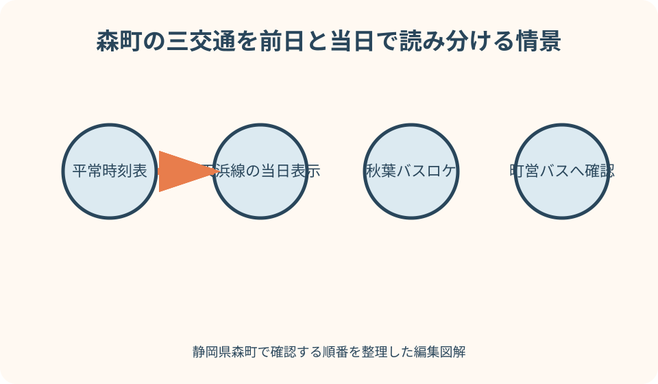
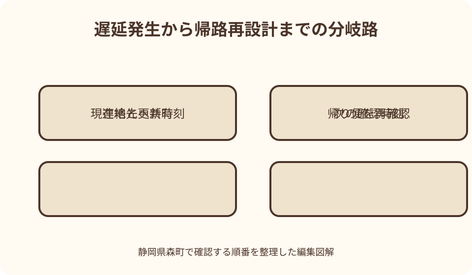

交通・外出・生活動線｜最終確認 2026-08-10
静岡県森町の電車・バス運行情報｜天浜線・秋葉バス・町営バスの確認順
時刻表に便が載っていることと、その便が今動いていることは同じではありません。静岡県森町では、天浜線、秋葉バス、町営バスで確認先が分かれ、運行情報の更新基準も異なります。外出前は平常時刻表で往復を組み、当日は運行者の最新表示で状況を確認し、遅延したら帰路と連絡を組み替える三段階で考えます。

編集イラスト運行確認は三段階に分ける
一段階目は、通常運行を前提に往路と帰路を作る作業です。時刻表から利用日、平日・休日の別、方向、乗車駅・停留所、乗換時間を読みます。この段階では『予定された便』を確認しているだけで、当日の運行を確定しているわけではありません。
二段階目は、当日の運行者発表を見る作業です。天浜線、秋葉バス、町営バスを一つの乗換検索だけで済ませず、運行主体の公式ページへ戻ります。更新時刻、対象区間、遅延・運休・迂回の別、次の更新予定を確認します。
三段階目は、予定が崩れた後の組み直しです。遅れている便を待つか、次便へ移るか、家族送迎を頼むか、外出を延期するかを、帰りの便まで含めて判断します。勤務先や学校へは、原因の推測ではなく公式表示と自分の現在地を伝えます。
この記事の確認日は2026年8月10日です。ダイヤ、予約便、運行情報の掲載基準、問い合わせ先は変わり得ます。記事に時刻を固定せず、利用日の公式時刻表と当日の更新情報を読み直す前提で使ってください。
平常時刻表と当日情報の役割を分ける
平常時刻表は、列車やバスが通常どの時刻に設定されているかを示します。運行情報は、事故、設備、天候、道路工事、催事などにより、その日の実際の運行が変わっているかを知らせます。時刻表が表示されるから運休していない、とは判断できません。
反対に、運行情報に異常の記載がないから、検索した便が必ず存在するとも限りません。古い時刻表、曜日違い、学校休業日、季節便、予約が必要な便を見ている可能性があります。先に時刻表の版と利用条件を確かめ、その上へ当日情報を重ねます。
乗換検索アプリは複数交通をまとめるのに便利ですが、更新の遅れや臨時変更の未反映があり得ます。候補づくりに使い、最終確認は天竜浜名湖鉄道、秋葉バス、森町の公式案内で行います。アプリと公式が違う場合は運行者へ確認します。
家族へ共有するスクリーンショットには、状態だけでなく更新日時とページ名を含めます。『平常』の二文字だけを切り抜くと、いつ、どの区間についての情報か分かりません。リンクも添え、受け取った家族が再読できるようにします。
前日に往路と帰路を同じ表へ置く
外出前日の表には、目的地の到着希望時刻から逆算した第一候補と、一本後の候補を書きます。乗換の待ち時間、駅・停留所間の徒歩、予約の締切、遅れた場合に間に合わない接続も一緒に示します。往路だけ整えて帰りを当日決めると、便数が少ない時間帯で困ります。
帰路は、予定どおり終わる便、少し遅れた便、最終候補の三本を並べます。森町の北部・山間部へ向かう町営バスや家族送迎を組み合わせる場合は、接続が切れた後にどこで待つか、迎えが来られるかを確認します。
平日と土曜・日曜・祝日、学校休業日、年末年始、催事時では運行が変わる場合があります。カレンダーの日付だけでなく、その日が時刻表上どの区分になるかを見ます。特別なお知らせが出ていないか、運行者トップページも開きます。
通院や予約行事では、交通遅延で遅れる場合の連絡期限も表へ入れます。交通が止まった後に連絡先を探すのではなく、病院、勤務先、学校、施設の電話番号と受付時間を前日に確認します。交通の代案と予定先への連絡を同じ担当にしなくても構いません。
天浜線は更新時刻と掲載基準まで読む
天浜線の公式サイトには、運賃・時刻表と運行情報が別にあります。遠州森、戸綿、森町病院前、円田、遠江一宮など利用する駅の時刻を確認した後、当日は運行情報ページを開きます。時刻表のPDFを保存していても、運行情報の代わりにはなりません。
天竜浜名湖鉄道は、列車の遅れがおおむね30分以上発生した場合に運行情報を知らせると案内しています。そのため『平常通り』という表示から、数分の遅れが一切ないとまでは読めません。接続時間が短い日は、駅や乗換先の状況も確認します。
運行情報には更新日時があります。ブラウザを以前開いたままにしていると古い表示を見る可能性があるため、再読み込みして時刻を見ます。家を出る前だけでなく、遠州森駅でバスへ乗り継ぐ前、帰路に入る前にも更新を確認します。
遅延や運休が表示されたら、全線か一部区間か、どの方向か、運転再開見込みが示されているかを読みます。再開時刻を自分で予想して駅へ急がず、公式発表にないことは未確定として扱います。急ぐ場合の問い合わせ先も公式ページから確認します。
秋葉バスは時刻表・お知らせ・バスロケを重ねる
秋葉バスの平常便は、停留所別または路線別の時刻表で確認します。森町内を通る秋葉線、秋葉中遠線などでは、同じ停留所名でも標柱や方向が分かれることがあります。乗る側の標柱と行先を合わせてから時刻を読みます。
当日の位置や運行状況は、秋葉バス公式サイトが案内するバスロケを確認します。バスロケの表示は、車両位置を見て到着を推測する補助になりますが、道路状況や通信の更新間隔があるため、表示地点だけで到着時刻を保証されたとは受け止めません。
迂回、工事、催事、臨時便、特別ダイヤは、公式サイトのお知らせに出る場合があります。通常時刻表だけを見ると、停留所の休止や経路変更を見落とします。利用する路線名、地区名、日付が入ったお知らせを探します。
バスが画面に見えない、予定時刻を過ぎても来ない場合は、停留所名、方向、時刻、路線を整理して秋葉バスの公式連絡先へ確認します。反対側の停留所へ移動したり、道路へ出て車両を探したりせず、安全な待ち場所を保ちます。
町営バスは路線・予約便・問い合わせ先を確認する
森町営バスは大河内線と吉川線の二路線です。町公式ページは時刻表、路線図、予約手順、運行に関する問い合わせ先を案内しています。秋葉バスの運行情報を見ても、町営バスの運休や予約状況まで分かるとは限りません。
町公式ページには、事前予約が必要な便があると記載されています。時刻表に便が載っていても、予約条件を満たしていなければ利用できない可能性があります。利用日、区間、便、予約期限、受付先を時刻表の注記から確認します。
町営バスの時刻表には基準日が表示されています。保存済みPDFの基準日と、公式ページで現在案内されている版を比較します。年度替わりや改定後は、家族の古い印刷物をそのまま使わず、路線図と時刻表をセットで更新します。
当日の運行を確かめるときは、町公式に示された路線別の問い合わせ先を使います。大河内線と吉川線のどちらか、予約便か、乗車予定停留所と時刻は何かを伝えます。町の代表窓口へ漠然と尋ねるより、運行担当へ必要情報をそろえて確認します。
複数交通の乗継は一本ずつ再判定する
天浜線から秋葉バスまたは町営バスへ乗り継ぐ日は、各便が動いていても接続できるとは限りません。列車が10分遅れれば、運行情報の掲載基準未満でもバスに間に合わないことがあります。乗換時間は運行異常の有無とは別に計算します。
第一便の遅れを確認したら、次の交通機関の発車時刻、乗場までの徒歩、乗車予約、待つ場所を見直します。接続先の運行者が遅れた列車を待つと記事では断定できません。公式案内または現地の係員へ確認します。
反対に、バスが遅れて遠州森駅の列車へ間に合わない場合もあります。次の列車、掛川方面・新所原方面の方向、目的地の受付終了、家族送迎の合流場所を確認します。駅前の道路上で待たず、安全な場所を先に決めます。
乗継表には、区間ごとに『平常時刻』『現在の状態』『確認時刻』『次の候補』の四列を作ります。一つの運行者が平常へ戻っても、他の路線の遅延や道路規制が残る場合があります。全行を更新してから外出継続を決めます。

雨・風・道路規制時は交通別に情報を重ねる
大雨、強風、雷、積雪などの予報がある日は、運行情報だけでなく気象情報も確認します。ただし、警報が出ていないから必ず運行する、警報が出たら全便運休する、と一律に判断しません。運行者が発表する対象区間と時刻を見ます。
バスは道路工事、倒木、冠水、催事の交通規制により、遅延や迂回が生じることがあります。秋葉バスのお知らせとバスロケ、町営バスの問い合わせを分けて確認します。自家用車なら通れるという推測を代案にしないようにします。
鉄道が動いていても、駅までの徒歩や自転車経路が危険な場合があります。川沿い、斜面、冠水しやすい道を通る必要があるなら、森町の防災情報や道路情報を見て外出自体を再検討します。運行中という表示は自宅から駅までの安全を保証しません。
通信が不安定になる可能性がある日は、時刻表、運行者の電話番号、家族の連絡先を紙にも残します。出発前の画面保存は参考になりますが、その後の変更を受け取れません。通信が切れた場合に戻る場所と、確認できないときの中止基準を家族で決めます。
遅延表示を見たときの判断表
最初に、現在地、目的地、到着必須時刻、今の遅延表示、次の更新予定を書きます。『遅れている』だけでは、待つか動くかを決められません。予定先が何分まで待てるか、帰路が残るかを同じ表で見ます。
次に、待つ場合の条件を決めます。屋根や照明のある待機場所、トイレ、家族への連絡手段、次に確認する時刻を設定します。見込みが出ていないのに無期限で待ち続けず、一定時刻に外出中止または代案へ切り替えるよう家族で合意します。
代案へ移る場合は、別の鉄道・バス、タクシー、家族送迎、徒歩、自転車、予定変更を比較します。運賃、予約、道路状況、夜間、子ども同伴、荷物量を確認し、存在するだけの交通手段を『使える代案』と数えません。
目的地へ向かうことだけでなく、帰宅できるかを最後に判定します。往路の代替便に乗ることで帰りの最終接続を失うなら、用事を短縮できるか、宿泊や迎えが必要かを先に確認します。帰路が確定しないまま遠方へ進まないことが重要です。
勤務先・学校・予約先へ伝える内容
勤務先へは、利用路線、現在地、公式に確認した状態、到着見込み、次回連絡時刻を短く伝えます。『電車が動かない』と断定するのではなく、『天浜線公式で何時現在、対象区間に遅延表示。次の更新を何時に確認する』と事実を区切ります。
学校へ連絡する場合は、保護者、本人、学校の誰が次の判断をするか決めます。朝の登校だけでなく、帰宅時の運休で迎えが必要になる可能性もあります。欠席・遅刻の連絡方法は学校ごとに異なるため、普段の公式連絡手段を使います。
病院や予約施設には、予約時刻、現在の到着見込み、受診・利用を継続するかを尋ねます。交通遅延なら必ず待ってもらえるとは限りません。無断で向かい続けるより、受付可能な時刻や日程変更を早く確認します。
家族へは、迎えを頼むかどうかだけでなく、合流場所、出発判断、車種、連絡不能時の待機先を共有します。運行が再開して不要になった場合の取消連絡も決めます。複数人が同時に迎えへ出ないよう、担当を一人にします。
家族送迎を代案にするときの境界
家族送迎は便利ですが、悪天候や道路規制が原因の運休時には、自家用車も同じ危険へ入る可能性があります。鉄道やバスが止まったから車なら安全、と結論づけず、道路情報と天候を確認します。
迎え場所は、駅前や停留所付近の通行を妨げない場所から選びます。遠州森駅などで待ち合わせる場合も、車寄せや駐車の条件を現地案内で確認します。バス停直前、交差点、生活道路での停車を代案にしません。
送迎担当が仕事中、飲酒後、疲労時、子どもの世話中なら、無理に運転を頼みません。タクシーの空車確認、予定変更、安全な場所での待機など別の案を用意します。タクシーも必ずすぐ来るとは限らないため、予約可否を当事者へ確認します。
迎えに向かう途中で運行再開が出ても、移動中の運転者へ長文を送らないようにします。安全に停車して確認できる時刻を決め、同乗者がいるなら連絡役を分けます。交通復旧の速さより、二次事故を避けることを優先します。
良い点
運行確認を三段階にすると、時刻表を調べた安心感だけで外出せずに済みます。予定、当日の状態、崩れた後の行動が別のため、どこまで確認済みか家族や勤務先にも説明しやすくなります。
森町公式の交通リンク集から、天竜浜名湖鉄道と秋葉バスの公式ページへ移れるのは大きな利点です。検索結果の古い時刻表を開く危険を減らし、鉄道・民間バス・町営バスの運行主体を区別できます。
天浜線の掲載基準や秋葉バスのバスロケの役割まで読むと、画面の空白や『平常』を過大解釈しなくなります。短い遅れ、位置情報の更新差、接続への影響を別に考えるため、乗換時間を現実的に見直せます。
帰路と連絡を前日に用意しておけば、運休発生後に家族全員が検索を始める必要がありません。本人は現在地と公式情報を確認し、家族は送迎や待機先、勤務先は予定変更を判断するという役割分担ができます。
注文したい点
森町内の交通は運行者ごとに情報ページが分かれています。利用者目線では、天浜線、秋葉バス、町営バスの当日情報と問い合わせ先を一画面からたどれる入口がさらに充実すると、災害や遅延時の検索負担を減らせます。
町営バスページは時刻表や予約手順を確認できますが、リアルタイム表示ではありません。当日運行の確認方法を、路線別の連絡先とともに文字情報でも明確に示すと、画像を読みづらい人や通信量を抑えたい人にも使いやすくなります。
天浜線はおおむね30分以上の遅れを情報掲載の目安としているため、短い接続を持つ利用者には表示だけでは足りません。運行情報の限界を理解し、駅や接続先の状況を自分で確認する必要があります。
秋葉バスのバスロケは有用ですが、位置表示と臨時のお知らせを別に読む必要があります。利用者は、車両がどこにいるか、停留所が休止・迂回していないか、時刻表自体が特別ダイヤでないかを三つに分けて確認します。
情報が食い違うときの優先順
乗換アプリ、検索結果、家族の印刷物、運行者公式で時刻が違う場合は、まず利用日と版を確認します。公式ページ内でも古いPDFへの直リンクを保存している可能性があるため、トップまたは時刻表一覧から現在案内されるファイルへ入り直します。
公式運行情報と現地表示が違う場合は、更新時刻を比べます。現地の係員や乗務員から直接案内があるなら、その対象便・区間を確認します。SNSの目撃投稿は参考に留め、自分の利用便へそのまま当てはめません。
家族が見た画面と本人の画面が違うときは、URL、更新時刻、対象区間を読み上げます。『動いている』『止まっている』だけでは、方向や区間が違う可能性があります。同じページを再読み込みし、表示時刻を一致させます。
情報が得られない場合は、運行しているとみなすのではなく未確認とします。出発を遅らせる、安全な場所で待つ、運行者へ問い合わせる、予定を中止するなど、確認不能を前提にした選択肢へ切り替えます。
代案・結論
遅延・運休時の代案は、次便、別交通、時間変更、家族送迎、外出延期の順に機械的に固定しません。利用者の年齢、天候、待機場所、帰路、目的地の締切を見て、使える案だけを残します。
天浜線が止まったときに秋葉バスが代行する、秋葉バスが遅れたときに町営バスで同じ目的地へ行ける、と記事では保証できません。路線、停留所、方向、運賃、予約を公式情報で比較し、代替輸送の発表がある場合はその案内に従います。
帰宅が難しいと分かったら、目的地へ着くことを優先し続けず、現在地で安全に待てるかを考えます。家族、勤務先、学校、予約先へ状況を共有し、次に確認する時刻を決めます。連絡を一度して終わりにせず、見込みが変わったら更新します。
結論は、前日に時刻表、当日に公式運行情報、異常時に帰路と連絡という三つの表を使うことです。すべてを一画面で済ませず、運行者ごとに確認日時を残せば、状況が変わっても判断をやり直せます。

家族に残す交通確認シート
シートの上段には、天浜線、秋葉バス、町営バスの公式時刻表と当日情報のURLを分けて置きます。リンク名に運行者、用途、確認日を書き、同じ『バス情報』という名前で保存しません。
中央には、利用者の往路、帰路、乗換、最終候補、予約便、待機場所を記します。通勤・通学の毎日同じ経路でも、曜日や改定で変わるため、年度替わりとダイヤ改定時に見直す欄を作ります。
下段には、勤務先、学校、病院、家族送迎、タクシーの連絡先と、伝える短文を置きます。『現在地、運行者発表、到着見込み、次回連絡時刻』の四点だけなら、焦っていても誤解を減らせます。
運行が戻った後は、どの情報が役立ち、何が足りなかったかを一行残します。家族送迎の待合せが危険だった、バスロケの見方が分からなかった、帰り便を決めていなかったなど、次回の前日確認へ反映します。
大石の視点
私は、交通の便利さを『駅やバス停が近いか』だけで評価しない方がよいと考えます。遅延・運休時に別の便があるか、家族が迎えに来られるか、安全に待てるかまで含めて、暮らしの動線だからです。
森町の町なかと天方・三倉などの山間部では、同じ一本の遅れでも影響が異なります。次便までの間隔、乗継、夜間の徒歩、通信環境を実際の利用日に記録すると、時刻表だけでは見えない負担が分かります。
住宅を探す家庭には、平日の朝だけでなく、雨の日の帰宅時間に駅・停留所から家までを確認することを勧めたいです。家族全員が同時に車を使えない日を想定すると、送迎を含めた交通費と時間の現実が見えます。
交通が不安定な日があるからと、すぐ移住や売却を諦める必要はありません。公式情報の確認先、帰路の第二候補、勤務先への連絡文、家族送迎の限界を先に整えることで、公共交通を生活に組み込みやすくなります。
外出前の五分確認
一分目に、保存した時刻表の版、利用日区分、往路・帰路を見ます。二分目に、天浜線の運行情報と更新時刻を確認します。天浜線を使わない日はこの欄を秋葉バスまたは町営バスに置き換えます。
三分目に、秋葉バスのお知らせとバスロケを見ます。四分目に、町営バスの路線、予約、当日問い合わせの必要を確認します。使わない交通機関まで毎回調べるのではなく、乗換に関係する運行者だけを確実に確認します。
五分目に、帰り便、待機場所、家族連絡先を見直します。画面上は平常でも、天候や道路、本人の体調に不安があるなら、外出を遅らせる判断を残します。運行情報は外出可否を決める唯一の材料ではありません。
家を出た後は、乗換前と帰路開始前を再確認の時点にします。常に画面を見続ける必要はありません。状況が変わる節目を決め、更新があれば勤務先や家族へ簡潔に共有します。
運行者へ確認する質問
天浜線には、『何時更新の情報か』『対象は全線か一部区間か』『利用予定方向に影響があるか』『次の案内はどこで確認するか』を尋ねます。再開時刻が発表されていなければ、予測を求め続けず次の更新方法を確認します。
秋葉バスには、停留所名、標柱方向、路線、予定時刻を伝え、『遅延か迂回か』『その停留所を通るか』『バスロケに表示がない場合の確認先』を聞きます。車両位置だけで運休と判断しません。
町営バスには、大河内線か吉川線か、予約便か、利用区間と時刻を伝えます。『予約は有効か』『当日運行に変更があるか』『乗継が切れた場合に案内できる次便はあるか』を確認します。
どの運行者にも、代替交通や接続保証を当然の前提として質問しません。公式に案内される範囲を聞き、自分の勤務先・家族・目的地への連絡は別に進めます。問い合わせ日時と回答の対象便を記録します。
まとめ
森町で電車・バスを使う日は、平常時刻表、当日運行情報、遅延後の帰路と連絡を分けます。時刻表に便があることも、運行情報に異常記載がないことも、利用便の定刻運行を単独では保証しません。
天浜線は公式運行情報の更新時刻と掲載基準、秋葉バスは時刻表・お知らせ・バスロケ、町営バスは路線・予約便・問い合わせ先を確認します。乗り継ぐ場合は、各交通を一本ずつ再判定します。
遅延や運休が分かったら、現在地、公式表示、到着見込み、次回連絡時刻を勤務先・学校・家族へ共有します。家族送迎も道路と天候を確認し、安全な合流場所が取れないなら無理に使いません。
最初の一歩は、明日の往路と帰路を同じ紙へ書き、森町公式の交通リンク集から各運行者の時刻表と当日情報をブックマークすることです。当日は更新時刻を見て、乗換前と帰路前に読み直してください。
公式情報・確認先
掲載内容は次の一次情報を基礎に整理しました。営業、料金、催し、交通は変わるため、出発前または手続き前にリンク先で最新情報を確認してください。
- 鉄道・民間路線バス・タクシー リンク集（静岡県森町、2026-08-10確認）
- 森町営バスのご案内（静岡県森町、2026-08-10確認）
- 森町の防災・安全情報（静岡県森町、2026-08-10確認）
- 運行情報（天竜浜名湖鉄道株式会社、2026-08-10確認）
- 運賃と時刻表（天竜浜名湖鉄道株式会社、2026-08-10確認）
- 秋葉バスサービス公式サイト（秋葉バスサービス株式会社、2026-08-10確認）